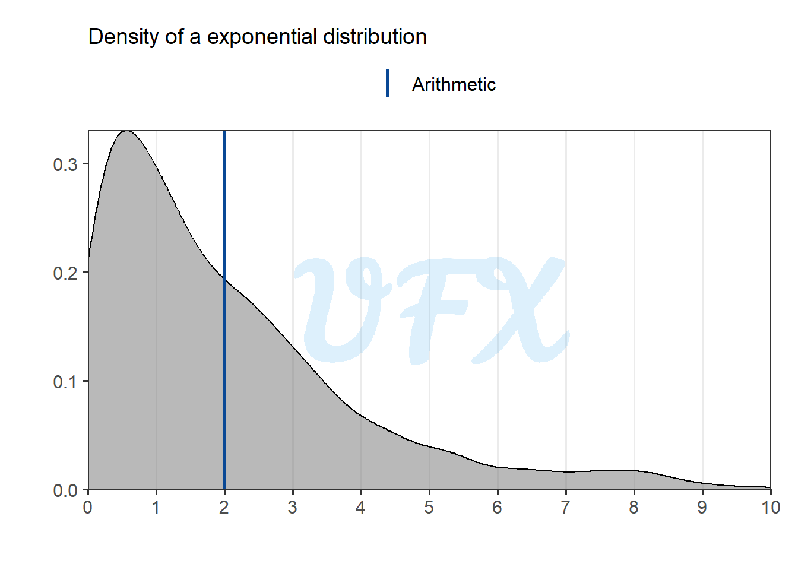
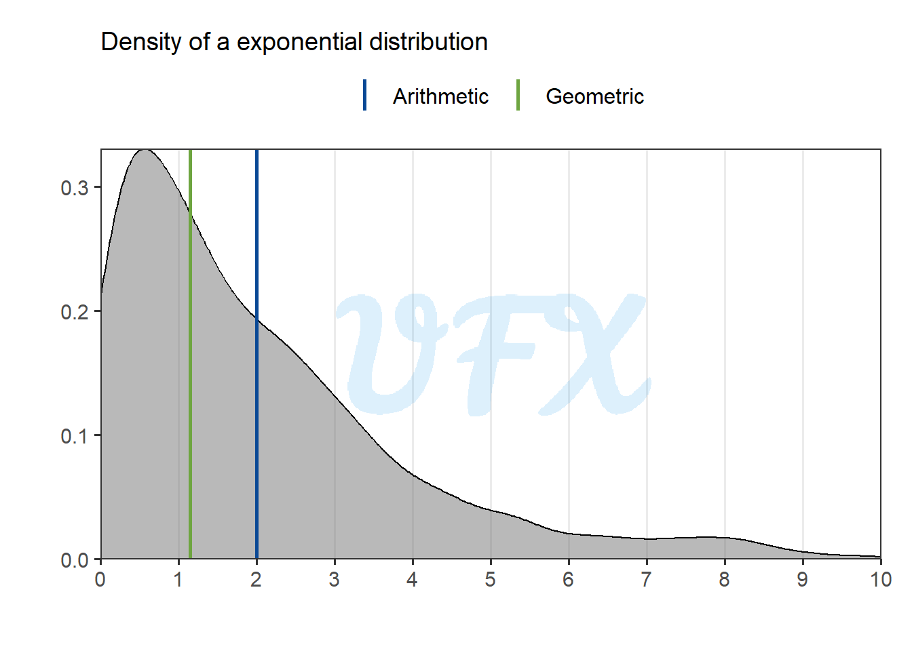
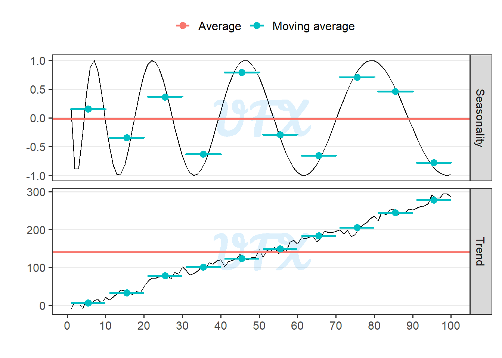

In this post of the series Intro to, I’ll navigate the Land of the Averages.
The Meme That Everyone Gets
The arithmetic mean, also known as the “mean,” is a fundamental concept in mathematics and statistics that represents the average value of a set of numbers. It is widely used to summarize data in a variety of fields.
To calculate it, add up all of the numbers in a dataset and divide by the total count, yielding a central value that evenly distributes the data points on a number line.
The simple
The simple arithmetic mean, is given by: \[ \frac{1}{n}\sum_\limits{i=1}^{n} x_i, \tag{1}\]
where:
- \(x_i\) is a numeric vector of length \(n\).
Because the arithmetic mean is simple to calculate and understand, it is accessible to a wide range of audiences, since it just entails the fundamental arithmetic operations of addition and division.
Outlier impact
The arithmetic mean can be significantly influenced by extreme values. A single value that is unusually high or low can skew the result, resulting in an inaccurate representation of the central tendency. Extreme values in small samples can have a greater impact on the mean than extreme values in large samples.
Consider the following example. To begin, we will compute the mean of a given vector of numbers.
[1] 1 2 2 3 3 3 4 5 5 5 7[1] 3.636364So the simple arithmetic mean is 3.636364, now we will change the last number to an extreme value.
[1] 1 2 2 3 3 3 4 5 5 5 100[1] 12.09091As we can see, the mean increases significantly, resulting in a distorted and unrepresentative metric of the data.
May Not Reflect True Center
In skewed distributions, the mean may not accurately represent the typical value experienced by the majority of data points. The mean can be pushed towards the distribution’s tail.
Let’s take a look at an example from a dataset from a exponential distribution.

As we can see, the mean is dragged far away from the peak density value by the larger values.
The weighted
The weighted arithmetic mean is a variant that considers not only the values in a dataset but also assigns different weights to each value based on its importance or significance.
In other words, rather than treating all values equally, the weighted mean favors some over others based on predetermined weights.
\[ \frac{1}{\sum_\limits{i=1}^{n}w_i}\sum_\limits{i=1}^{n} w_ix_i, \tag{2}\]
where:
\(x_i\) is a numeric vector of length \(n\);
\(w_i\) is a numeric vector of length \(n\), with the respectives weights for the values of \(x_i\).
A practical application is in academic grading, the weighted mean of exam scores might be used, where different exams carry different weights based on their importance.
A common case is when proportion (\(p_i\)) are used as weigths, and since:
\[ \sum_\limits{i=1}^{n} p_i = 1. \tag{3}\]
When applying Equation 3 to Equation 2 we have that:
\[ \sum_\limits{i=1}^{n} w_ix_i. \tag{4}\] Even if it is an interesting application, assigning weights to data points is frequently subjective and can be influenced by personal judgment or assumptions. The weighted mean’s accuracy is heavily dependent on the appropriateness of the weights chosen.
In addition, calculating the weighted mean requires an extra step when compared to the simple arithmetic mean, which may complicate the analysis and calculations, particularly when dealing with large datasets. In some cases, the rationale for assigning specific weights may not be transparent or well-documented, which can make replicating or validating the analysis difficult.
The trimmed
A trimmed arithmetic mean is a statistical measure that computes the mean of a dataset by excluding a percentage of the lowest and highest values, reducing the impact of outliers and extreme values.
The amount of trimming can be adjusted to strike a balance between retaining meaningful data and reducing the impact of outliers.
Let’s go back to our previous outlier example.
[1] 1 2 2 3 3 3 4 5 5 5 100[1] 3.555556That is the same as applying a simple arithmetic mean to
[1] 2 2 3 3 3 4 5 5 5[1] 3.555556As the data is trimmed, we achieve a more representative metric for our data, but this is due to an intentional loss of information, which may result in an incomplete representation of the data’s full range. Important insights or trends within the data may be overlooked depending on the extent of trimming.
When Averages Go Proportional
The geometric mean is a statistical measure used to determine the central tendency of a set of values, particularly when those values are multiplicatively related.
The geometric mean, as opposed to the arithmetic mean, involves multiplying the values and then taking the \(n\)th root, where \(n\) is the total number of values. This makes it especially useful for data with exponential or multiplicative growth, such as investment returns, population growth rates, or scientific measurements.
\[ \sqrt[n]{\prod_\limits{i=1}^{n} x_i}, \tag{5}\]
where:
- \(x_i\) is a numeric vector of length \(n\).
Another way to write the Equation 5 is:
\[ \begin{align} \sqrt[n]{\prod_\limits{i=1}^{n} x_i} &= \sqrt[n]{x_1x_2...x_n} \\ &= (x_1x_2...x_n)^{1/n} \\ &= \mathcal{e}^{\mathcal{ln}(x_1x_2...x_n)^{1/n}}\\ &= \mathcal{e}^{\frac{1}{n}[\mathcal{ln}(x_1)+\mathcal{ln}(x_2)...+\mathcal{ln}(x_n) ]}\\ &= \mathcal{e}^{\frac{1}{n}\sum_\limits{i=1}^{n}\mathcal{ln}(x_i)}. \end{align} \tag{6}\]
So we can see that the geometric mean can be written as the exponetial of the simple arithmetic mean (Equation 1) of the logarithmic of \(x_i\).
- Logarithmic scale
Let’s go back to our first example and see in comparison to the arithmetic mean.
[1] 1 2 2 3 3 3 4 5 5 5 7| arithmetic | geometric |
|---|---|
| 3.636364 | 3.213991 |
We can see that the geometric mean yields a slightly lower value.
Accurate Representation of Growth
When using the geometric mean with fractional values, the result represents the “average growth factor” between the values. It indicates the factor by which you need to multiply each value to obtain the overall product.
[1] 0.100 0.200 0.300 0.050 0.004| arithmetic | geometric |
|---|---|
| 0.1308 | 0.0654389 |
Sensitivity to Small Values
The geometric mean is sensitive to small values in the dataset. This sensitivity can be advantageous when you want to emphasize the impact of small values or identify trends that might be overshadowed by larger values.
Let’s add a small value instead of the first value in our first example.
[1] 0.1 2.0 2.0 3.0 3.0 3.0 4.0 5.0 5.0 5.0 7.0| arithmetic | geometric |
|---|---|
| 3.554546 | 2.606968 |
As we can see, the presence of the smaller value severely “penalizes” the geometric value.
Outlier Impact
Unlike the arithmetic mean, the geometric mean is less affected by outliers. This is due to the fact that the geometric mean is equivalent to taking the arithmetic mean of the logarithms of the values. This property has the effect of compressing the data, making extreme values contribute less to the final result.
Let’s go back to our outlier example.
[1] 1 2 2 3 3 3 4 5 5 5 100| arithmetic | geometric |
|---|---|
| 12.09091 | 4.092944 |
As we can see, the geometric mean has a significant less impact of the larger value.
Zero Gravity: When Geometric Mean Gets Lost in Space
When a zero value is present in a dataset, calculating the geometric mean becomes problematic because the value will always be zero, since it is the product of values.
Undefined for Negative Values
Because a negative number raised to a non-integer exponent can produce complex results, the concept of a geometric mean for negative values is meaningless in the realm of real numbers.
May Not Reflect True Center

In this scenario, the geometric mean approaches the peak value of the density in the example because it is more resistant to larger values and more sensitive to smaller data.
The Odd One Out in the Mean Squad
The harmonic mean is a statistical measure of central tendency used to calculate the average of a set of values when their reciprocal (inverses) is more important than their arithmetic mean.
\[ \frac{n}{\sum_\limits{i=1}^{n}\frac{1}{x_i}} \tag{7}\]
where:
- \(x_i\) is a numeric vector of length \(n\).
Let’s compare it to the other approaches.
[1] 1 2 2 3 3 3 4 5 5 5 7| arithmetic | geometric | harmonic |
|---|---|---|
| 3.636364 | 3.213991 | 2.75492 |
We can see that harmonic provided a smaller value to our fist example.
Sensitivity to Small Values
Since the harmonic mean takes the inverse of the original value, it is even more sensitive to small values than the geometric mean, leading to extremely large results for values close to zero.
[1] 0.1 2.0 2.0 3.0 3.0 3.0 4.0 5.0 5.0 5.0 7.0| arithmetic | geometric | harmonic |
|---|---|---|
| 3.554546 | 2.606968 | 0.846619 |
Outlier impact
[1] 1 2 2 3 3 3 4 5 5 5 100| arithmetic | geometric | harmonic |
|---|---|---|
| 12.09091 | 4.092944 | 2.849741 |
At the same time, a larger value has less of an impact on the method.
Zero Gravity: When Harmonic Mean Gets Lost in Space
Calculating the harmonic mean when there is a zero value in a dataset becomes difficult because the value is undefined since it is the sum of the inverse of the values and there is no division by zero.
May Not Reflect True Center

Because the harmonic mean is more robust to larger values and more sensitive to smaller data, it provides a lower value in the example above than the other methods.
Time Travelers’ Guide
A moving average is a statistical technique used to smooth out fluctuations in time series or sequential data by averaging a subset of data points within a moving window. It reduces noise to reveal underlying trends and patterns, and it is available in a variety of forms, including the simple moving average, weighted moving average, and exponential moving average.
Moving averages are used to detect trends and reduce noise in fields such as finance, economics, signal processing, and climate science. However, because of the lag in detecting rapid changes and the potential impact of outliers, the moving average type and window size should be chosen based on data characteristics and analysis objectives.
In time series we can have some special patterns in data, the two most common are trends, which represent long-term consistent movements in data, whether upward, downward, or flat, and seasonality, which refers to recurring and predictable patterns that repeat at regular intervals, linked to specific calendar periods.

When we apply the mean to the entire period, the result can be meaningless. To use the moving average, we must first define the interval over which the average will be calculated; in the example below, we will first display the moving average for each 10 units of time.

The moving average can improve data smoothing, noise reduction, and trend identification by highlighting underlying patterns by averaging subsets of data points. However, due to the equal weighting of all data points, it introduces a lag in detecting rapid changes, is sensitive to window size, and may not accurately capture recent trends.
While moving averages are effective for regular patterns, they may be ineffective for irregular data or abrupt shifts, potentially leading to oversimplification and loss of detail in the analysis.